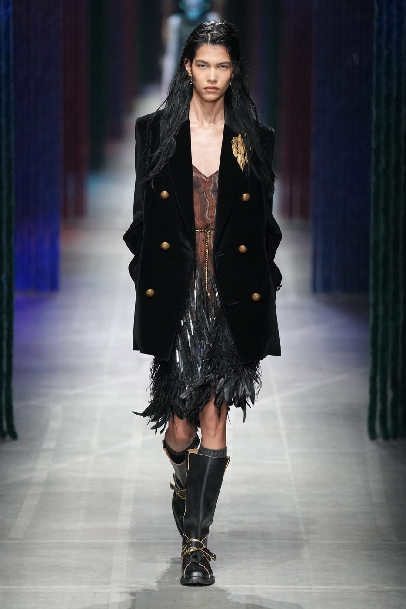

When Marco De Vincenzo presented his Autumn/Winter 2026 collection for Etro in February, nobody in the front row knew it would be the last. Titled Loop Forward, the show moved like a wave from disciplined restraint to full-throated maximalism — a structure that now reads, in hindsight, as the arc of his entire tenure: arrival, discovery, crescendo, departure.
The opening looks were a surprise. Where De Vincenzo had spent nearly four years training the fashion world to expect Etro’s signature chromatic exuberance from the first exit, here he began in near-silence: tailored peacoats in dusty autumnal tones, scarves threaded through slits to form built-in martingales, corset inserts spliced into menswear silhouettes with a surgeon’s precision. The palette was muted, almost monastic — tobacco, slate, undyed wool. It was as though he wanted to prove that beneath the paisleys and the saturated prints, there was always a rigorous hand at work.
And there was. De Vincenzo arrived at Etro in 2022, recruited from a career that included his own acclaimed label and a long consultancy with Fendi’s leather-goods division. The appointment was, at the time, a statement of intent from Etro’s new ownership under L Catterton: the house needed someone who could honour the founding family’s bohemian vocabulary while pushing the brand toward the commercial sharpness that the luxury market now demands. It was not an easy brief. Etro is a house that lives and dies by its prints, its sense of wanderlust, its stubborn refusal to conform to minimalist fashion cycles. De Vincenzo understood this immediately.
From rigour to rapture
As the Loop Forward show progressed, the restraint began to loosen. Paisleys emerged first as linings glimpsed through vents, then as full panels across fluid dresses, then as all-over explosions of colour on caftans and wide-leg trousers. The palette expanded from earth tones into vermillion, cobalt and an extraordinary shade of saffron that seemed to glow under the show lights. It was a masterclass in pacing — each exit building on the last, the visual temperature rising by careful degrees until the finale delivered a cascade of golden fringes, feathery stoles and ruffled dresses that shimmered like something between a Klimt painting and a Marrakech souk at dusk.
The accessories, too, carried the weight of De Vincenzo’s legacy. His contribution to Etro was perhaps most consequential on this front: the structured shoulder bags, the woven clutches, the jewelled sandals that brought a rigour to the house’s accessories offering that it had previously lacked. His training at Fendi showed in the precision of the leatherwork, but the spirit remained unmistakably Etro — generous, decorative, unapologetically ornate. The Loop Forward collection included variations on his signature soft-frame bag, now offered in embossed paisley leather and fringed suede, pieces that felt like they were designed to accumulate stories rather than simply to be carried.
This is a brand that has been founded on escapism. You belong to our world if you like the idea to go somewhere else.
Marco De VincenzoThat quotation, offered backstage after the show, now serves as something close to an epitaph for De Vincenzo’s time at the house. When his departure was announced in March — by mutual agreement, as these things always are — the industry response was measured but genuine. He had not reinvented Etro; he had, more valuably, made it legible to a generation of consumers who had filed the brand under “nice prints, not for me.” Under his direction, Etro became a credible alternative to the minimalist uniformity of its Milanese neighbours, a house that stood for colour, pattern and a kind of joyful cultural nomadism at a moment when fashion was crying out for exactly that.
What comes next

Etro Fall/Winter 2026 runway — Photography by Alessandro Viero courtesy of The Impression
A successor has yet to be named, and the speculation has been unusually quiet. What is clear is that whoever inherits the role will take on a house in considerably better shape than the one De Vincenzo entered. The brand’s accessories business has been revitalised. Its runway shows, once pleasant but forgettable stops on the Milan schedule, became appointment viewing. And the recent Etro Ornamenta collection, presented at Salone del Mobile 2026, demonstrated the breadth of the house’s ambition: quilted surfaces, embossed paisleys rendered in tone-on-tone relief, geometric frames that translated the brand’s textile DNA into interior objects with real conviction.
The temptation in moments like these is to eulogise. But De Vincenzo would not want that — his work was always too forward-looking, too restless for retrospection. The Loop Forward title said it plainly: fashion moves in circles, but the direction is always ahead. He gave Etro four years of genuinely exciting, commercially astute collections that respected the archive without becoming imprisoned by it. He left the paisley in better hands than he found it. In fashion, where exits are so often accompanied by recrimination and decline, that qualifies as a rare and graceful thing.